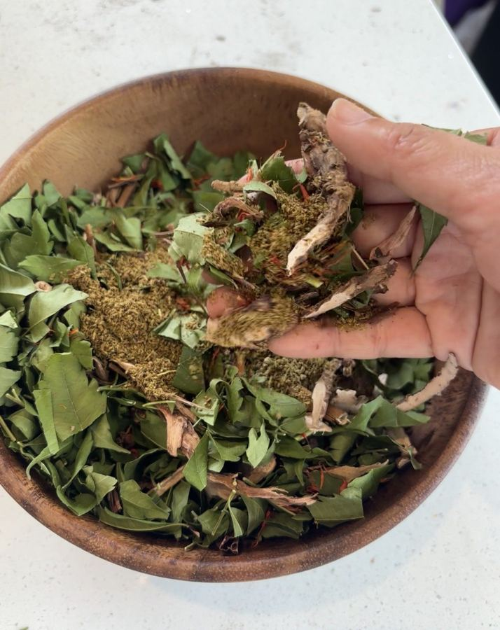
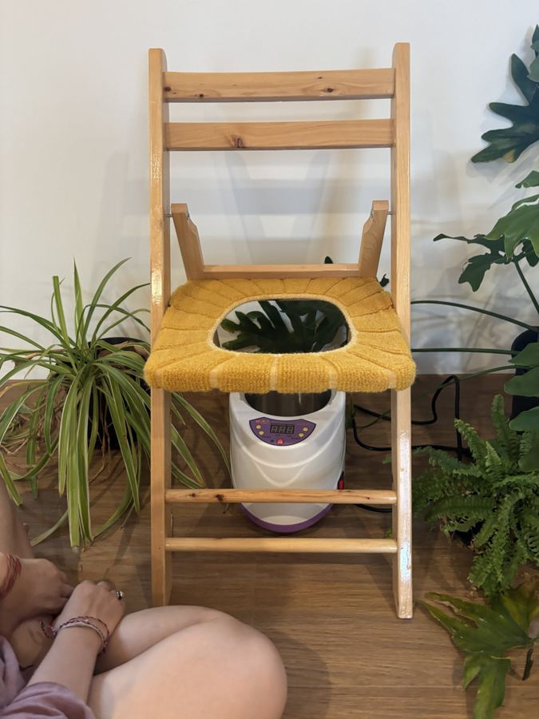

那個最辛苦、也最少被問候的地方
生產的時候，會陰是撐得最開的地方。
有人撕裂、有人被剪了一刀、有人縫了好幾針。生完之後，它腫、它痛、它怕——坐下來要小心，上廁所要咬牙，連洗澡都不太敢看它。
可是這個部位，很少被溫柔地對待。
我們會幫寶寶擦屁屁、換尿布、抹護膚膏，卻很少有人跟媽媽說：「來，我們也照顧一下妳那裡。」
會陰薰蒸，就是一種把溫柔留給那個地方的方式。
什麼是會陰薰蒸？
會陰薰蒸，英文常叫 Yoni Steam（約尼蒸氣）。Yoni（約尼）是梵文，指女性的生殖之源，在印度的傳統裡帶著神聖的意思。

做法很簡單：把藥草煮成一鍋溫熱的藥草水，放在一張中間挖空的椅子下面，媽媽坐上去，披上斗篷，讓溫和的蒸氣慢慢地照顧會陰。
這不是哪一個文化獨有的東西。韓國有「坐薰」，印尼有用丁香、肉豆蔻葉做的 Oukup（歐庫普）蒸浴，中美洲、非洲也都有類似的產後蒸氣傳統。[1][2] 前面寫印度坐月子的時候，也提到印度會用藥草的煙來薰蒸產婦的下身。
世界各地的女人，好像不約而同地知道：生完之後，那裡需要一點溫暖。各地的傳統，我另外整理成一篇〈會陰薰蒸的世界地圖〉。
我怎麼做

在我的療程裡，會陰薰蒸大約是這樣進行的：
- 先聊一聊：產後幾週、自然產還是剖腹、有沒有縫線、惡露的狀況、有沒有親餵、對哪些植物敏感。
- 煮藥草：把葉子、花草和香料煮成溫熱的藥草水。有親餵的媽媽，我會選比較溫和的配方。
- 先試溫度：我會先把手放在蒸氣上。要是溫暖、舒服，不是燙。
- 坐下來，披上斗篷：全程有遮蓋，大約 20 分鐘。蒸氣只在外面，不會進到身體裡。
- 靜養：結束後蓋著毯子躺一下，喝一杯溫熱的茶，不急著起來。
對我來說，會陰薰蒸珍貴的，不只是蒸氣的溫度，也是終於有人好好照顧那個地方的那份安心。
誠實的那一面
我很喜歡會陰薰蒸，但我也想把話說清楚：
它目前沒有扎實的研究證據。 我找到的研究多半來自印尼，規模很小、也沒有隨機分組，結果還互相矛盾——有一項研究說丁香肉豆蔻蒸浴讓傷口癒合得比較快，另一項同樣的蒸浴，卻看不到差別。[2][3] 網路上說它能「排毒」「清子宮」「調荷爾蒙」，這些說法我都查不到證據，所以我不會這樣說。
它可能燙傷。 2019 年，加拿大婦產科期刊報告了一個案例：一位 62 歲的女性，為了改善子宮脫垂，連續兩天坐在剛煮滾的水上 20 分鐘，造成陰道和子宮頸二度燙傷。[4] 這也是為什麼，我一定先用手試溫度，水也不會是剛滾的。
不是每個人都喜歡熱。 英國媽媽論壇 Mumsnet 上，有媽媽說產後的傷口一碰熱就刺痛，她反而比較喜歡冰敷，或是溫水坐浴。[5] 這很正常。身體說不要，就不要。
所以我會說：會陰薰蒸是一段溫暖的照顧和放鬆，不是治療。它不能取代醫師或助產師對傷口的檢查。
什麼時候先不要
如果妳有下面這些狀況，請先不要薰蒸，或先問過妳的醫師、助產師：
- 惡露量突然變多、有異味，或傷口紅腫、化膿、發燒
- 產後大量出血還沒穩定
- 懷孕中
- 月經期間
- 對藥草過敏
產後的時機，各家說法不太一樣：有人說縫線癒合後就可以，有人建議等惡露乾淨，大約產後 4 到 6 週。[1] 我會依妳產後的週數、傷口和當天的狀況一起判斷，產後初期只用很輕、很溫和的方式。
被允許放鬆的那個地方
寫這篇，我一直想到一件事：
很多女人對自己的會陰，是陌生的，甚至是有點羞愧的。生完之後，它變成一個「出了事」的地方——被剪、被縫、被檢查，卻很少被好好地感受。
會陰薰蒸讓我很感動的，是它的姿態：妳只是坐著，什麼都不用做，讓溫暖從下面慢慢地上來。
那是一種很少有的經驗——身體最私密、最辛苦的地方，被允許放鬆。
邀請妳先停一下，深吸一口氣，把注意力輕輕放到骨盆底，問問它：
這陣子，辛苦了，妳還好嗎？🌿
如果妳想體驗看看，會陰薰蒸可以單獨預約（約 60 分鐘，含身心諮詢與靜養），也可以加在溫油按摩的療程裡。歡迎私訊我，我們先聊聊妳現在的身體。💛
資料來源
- Wikipedia〈Vaginal steaming〉（各地傳統、時機說法、Robert 2019 案例出處）：連結（綜合）
- 印尼 Oukup（丁香、肉豆蔻葉蒸浴）與會陰傷口癒合的準實驗研究，24 位初產婦，兩組無顯著差異：AIHD-MU（學術・小型研究）
- 另一項 Oukup 準實驗研究，報告癒合時間 5 天 vs 8 天（p = 0.001）：經搜尋摘要轉述，Delihusada 期刊（學術・小型研究，原文未逐字核對）
- Robert M.（2019）〈Second-Degree Burn Sustained After Vaginal Steaming〉*Journal of Obstetrics and Gynaecology Canada* 41(6):838–839，PMID 30366886；報導：Live Science（學術・個案報告）
- Mumsnet〈Yoni steaming, does it work?〉：連結（社群）
圖片來源
- Birth with Milliya 服務現場
本文為資訊整理，不構成醫療建議，也不能取代妳與醫師、助產師、兒科醫師的直接討論。